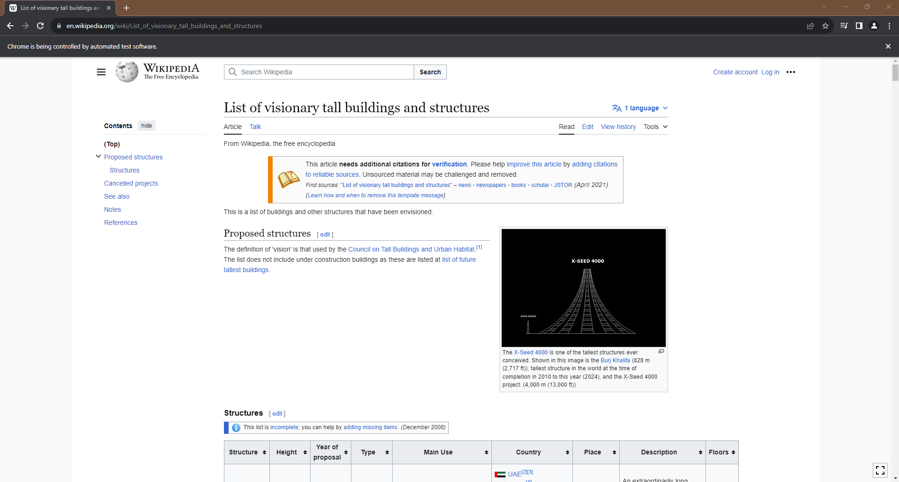
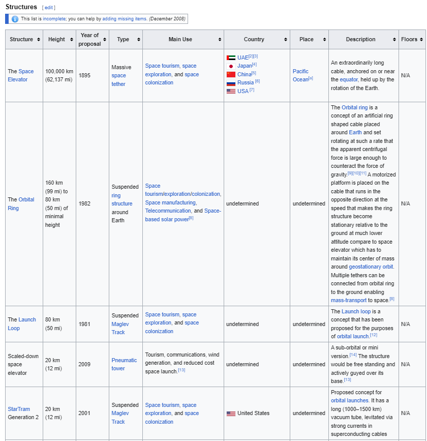
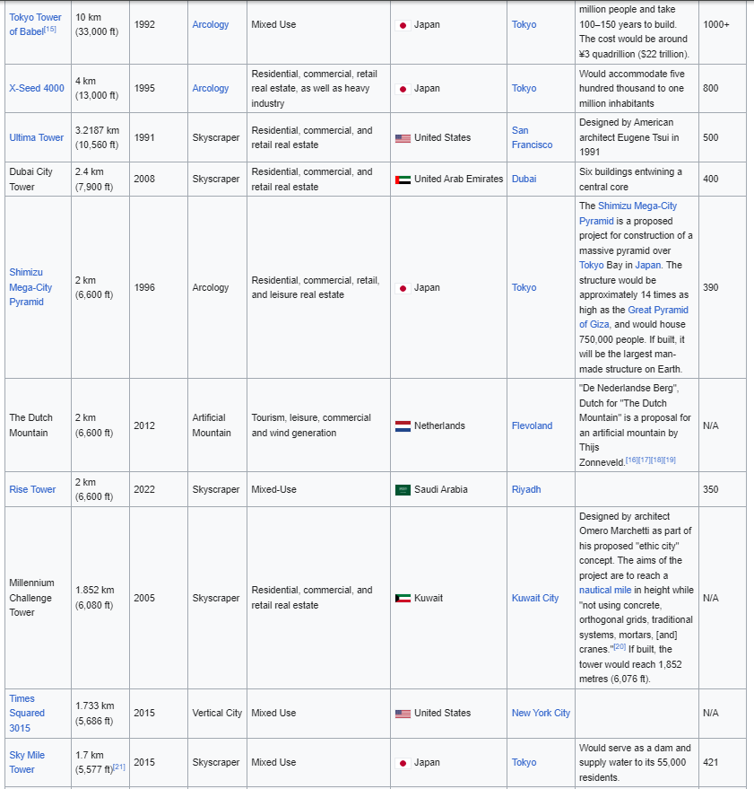
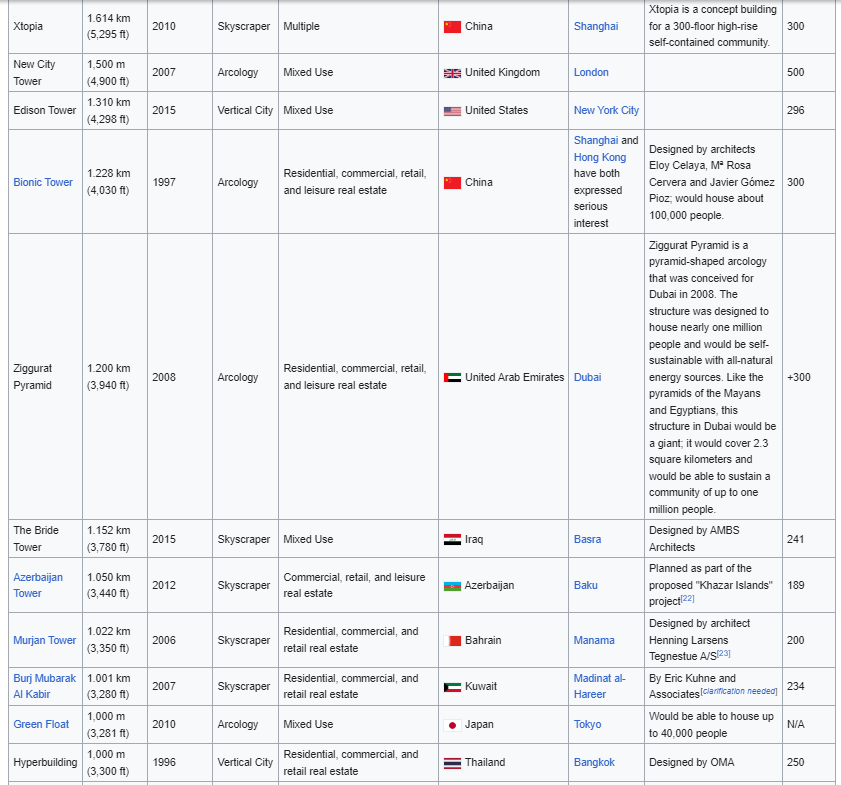
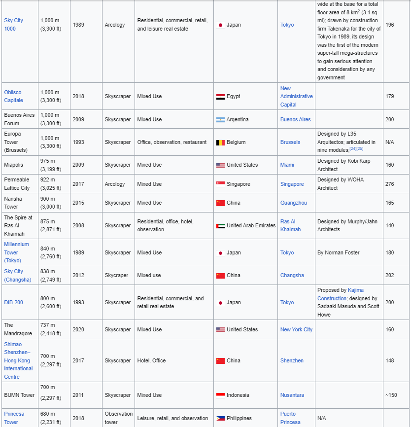
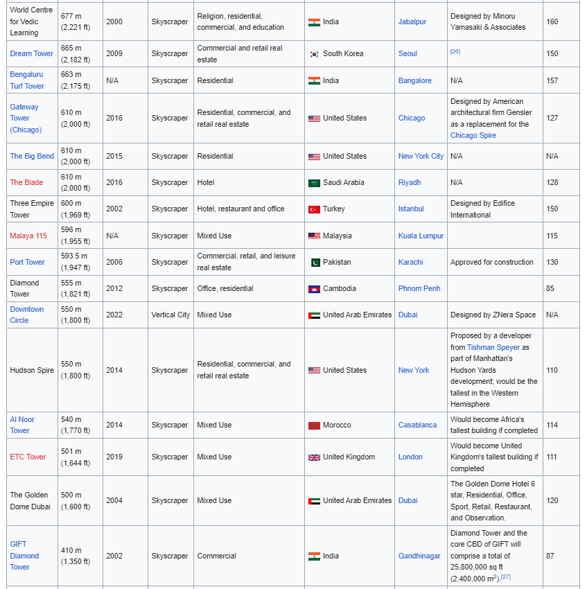
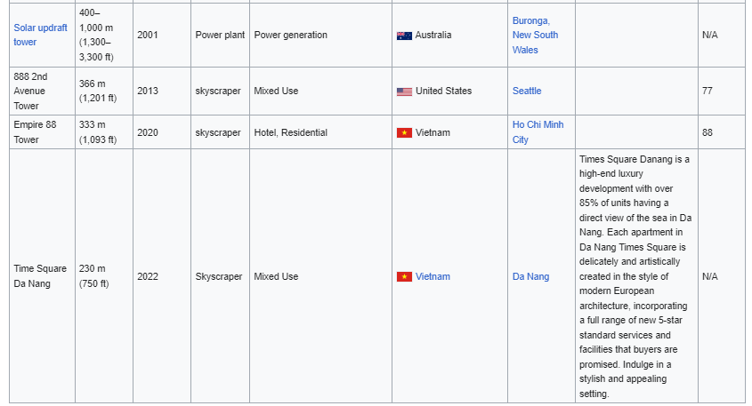
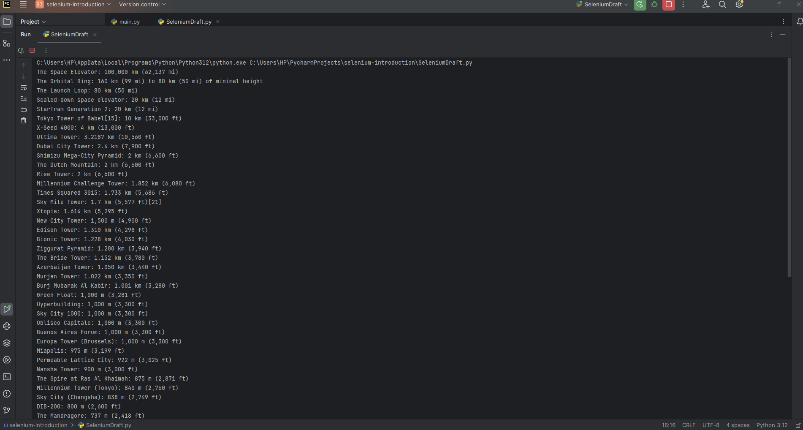
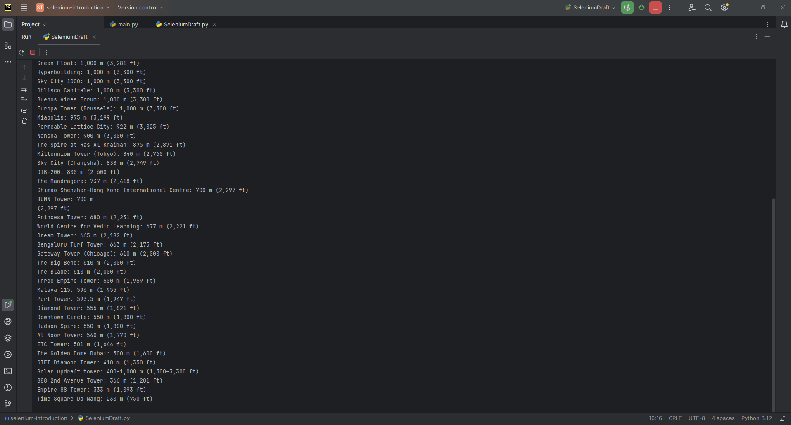

Python Code:
from selenium import webdriver
from selenium.webdriver.chrome.options import Options
from selenium.webdriver.chrome.service import Service
from selenium.webdriver.common.by import By
from selenium.webdriver.support.ui import WebDriverWait
from selenium.webdriver.support import expected_conditions as EC
Imports the webdriver module from Selenium, which provides a way to interact with web browsers.
Imports the Service class from the chrome.service module. Service is used to configure and start the ChromeDriver service, which is necessary for Selenium to communicate with the Chrome browser.
Imports the By class from the common.by module. By is used to specify the mechanism used for locating elements on a web page (e.g., by ID, by class name, by XPath).
Imports the WebDriverWait class from the support.ui module. WebDriverWait is used to wait for a certain condition to occur before proceeding with the execution of the script. It's often used to wait for elements to be present, visible, clickable, etc.
Imports the expected_conditions module from the support module and aliases it as EC. expected_conditions contains a set of predefined conditions that can be used with WebDriverWait. For example, waiting for an element to be clickable, visible, etc.
url = 'https://en.wikipedia.org/wiki/List_of_visionary_tall_buildings_and_structures'
Defines the URL of the Wikipedia page to be scraped and the path to the ChromeDriver executable.
chrome_options = Options()
service = Service(path)
Sets up Chrome options and service.
driver = webdriver.Chrome(service=service, options=chrome_options)
Initializes the Chrome webdriver with the specified options and service.
driver.get(url)
driver.maximize_window()
Opens the specified URL in the Chrome browser and maximizes the window.
table_locator = (By.XPATH, '//table[@class="wikitable sortable jquery-tablesorter"][1]')
table = WebDriverWait(driver, 10).until(EC.presence_of_element_located(table_locator))
Uses WebDriverWait to wait for the table to be present in the Document Object Model (DOM).
structure_names = [element.text for element in structure_elements]
height_names = [element.text for element in height_elements]
Finds specific elements within the table using XPaths.
# Zip the two lists together
zipped_data = zip(structure_names, height_names)
Zips the extracted structure names and height names together into a list of tuples.
for structure_name, height_name in zipped_data:
print(f"{structure_name}: {height_name}")
Prints the extracted building names and their corresponding heights in a formatted way.
while True:
pass
Adds an infinite loop to keep the browser window open, allowing the user to manually close it.
Run the code:
        